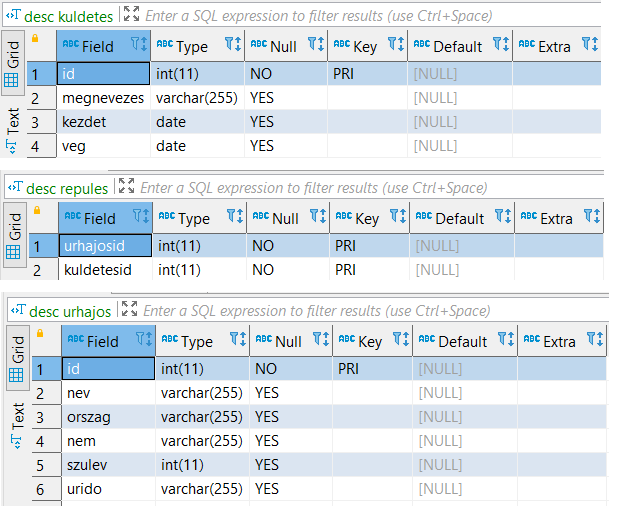

Astronaut Database Project
Relational MySQL project focused on astronaut records, missions, and multi-table analytical SQL queries.
Overview
This project was built around an astronaut-themed relational database and focuses on practical SQL problem solving. It includes schema creation, data relationships, and query tasks that require combining information from multiple tables.
The main goal was to demonstrate structured database thinking: not only writing individual queries, but also working with entities, foreign key relationships, and more realistic data retrieval logic.
Project Goal
The database stores information related to astronauts and their missions, and the SQL tasks are designed to answer meaningful questions from this domain. The project demonstrates how a relational model can support both operational data storage and analytical querying.
Entity Modeling
The project defines structured entities and their relationships instead of storing all information in a single flat table.
Multi-Table Querying
The exercises rely on joining related tables to answer more advanced questions about astronauts and missions.
Analytical Logic
The project includes filtering, grouping, and result comparison tasks that go beyond basic SELECT statements.
Database Structure
The Astronaut project is based on a relational schema where the database is split into logically connected tables. This structure makes the data easier to maintain and allows more complex queries to be written in a clean way.
Schema Design → Table Creation → Primary / Foreign Keys → Data Loading → Join Queries → Aggregations → Result Interpretation

Database Schema: Following tables are used in the project.
SQL Skills Demonstrated
DDL
- CREATE DATABASE
- CREATE TABLE
- Column definitions
- Constraints
Relationships
- Primary keys
- Foreign keys
- Table linking
- Consistent structure
Query Logic
- INNER JOIN / LEFT JOIN
- WHERE filtering
- ORDER BY
- Subqueries if needed
Analysis
- COUNT
- GROUP BY
- Aggregate calculations
- Summary outputs
Example Query Scenarios
The Astronaut database project demonstrates practical SQL work on a relational dataset about astronauts, missions, and mission participation. The selected examples show how SQL can be used for data insertion, aggregation, join-based analysis, missing-data handling, and more advanced mission logic.
1. Registration of a new astronaut
This example demonstrates a basic data insertion task. A new astronaut record is added to the database with nationality, gender, birth year, and total time spent in space.
INSERT INTO urhajos
VALUES (570, "Fehér Anett", "HUN", "N", 1973, "T000:00:10");
2. Which missions were conducted during Christmas?
This query identifies missions whose time interval covered Christmas. It combines date filtering with DATEDIFF to calculate mission duration in days.
SELECT megnevezes,
DATEDIFF(kuldetes.veg, kuldetes.kezdet) AS idotartam,
kezdet,
veg
FROM kuldetes
JOIN repules ON kuldetes.id = repules.kuldetesid
JOIN urhajos ON repules.urhajosid = urhajos.id
WHERE (MONTH(kezdet) AND DAY(kezdet) <= '12-24')
AND (MONTH(veg) AND DAY(veg) >= '12-26')
AND YEAR(kezdet) < YEAR(veg) ORDER BY kezdet; 
3. List astronauts and their missions, who spent the longest time in space!
This query uses multiple JOIN to list all astronauts with the longest total time spent in space, which is calculated using DATEDIFF on mission start and end dates, and using subqueries to find the maximum duration across all missions. It demonstrates more complex join and filtering logic.
SELECT urhajos.nev, urhajos.id, urhajos.orszag , urhajos.nem, DATEDIFF(kuldetes.veg,kuldetes.kezdet)
FROM kuldetes JOIN repules ON kuldetes.id = repules.kuldetesid JOIN urhajos ON repules.urhajosid =urhajos.id
WHERE DATEDIFF(kuldetes.veg,kuldetes.kezdet) = ( SELECT MAX(DATEDIFF(kuldetes.veg,kuldetes.kezdet)) FROM kuldetes JOIN repules ON kuldetes.id = repules.kuldetesid JOIN urhajos ON repules.urhajosid =urhajos.id )
ORDER BY DATEDIFF(kuldetes.veg,kuldetes.kezdet) DESC;
4. Astronauts who have traveled to space more than once
This query uses GROUP BY and HAVING to identify astronauts who participated in more than one mission. It highlights repeated mission participation.
SELECT urhajos.nev,
COUNT(kuldetes.megnevezes)
FROM kuldetes
JOIN repules ON kuldetes.id = repules.kuldetesid
JOIN urhajos ON repules.urhajosid = urhajos.id
GROUP BY urhajos.nev
HAVING COUNT(kuldetes.megnevezes) > 1
ORDER BY COUNT(kuldetes.megnevezes);
5. Mixed-crew missions
This is a stronger relational query using EXISTS. It lists missions where both male and female crew members were present, which demonstrates more advanced mission-level filtering logic.
SELECT DISTINCT k.megnevezes, u1.nem
FROM kuldetes k
JOIN repules r1 ON k.id = r1.kuldetesid
JOIN urhajos u1 ON r1.urhajosid = u1.id
WHERE EXISTS (
SELECT 1
FROM repules r2
JOIN urhajos u2 ON r2.urhajosid = u2.id
WHERE r2.kuldetesid = k.id AND u2.nem = 'f'
)
AND EXISTS (
SELECT 1
FROM repules r3
JOIN urhajos u3 ON r3.urhajosid = u3.id
WHERE r3.kuldetesid = k.id AND u3.nem = 'n'
);
Why This Project Is Strong for a Portfolio
- It shows relational thinking. The project is based on linked tables rather than a single simple dataset.
- It demonstrates multi-table querying. This is more representative of real SQL work than isolated beginner queries.
- The theme is memorable. A space-related database is visually stronger and easier to remember than a generic example.
- It combines structure and analysis. The project reflects both schema design and query-based problem solving.
Notes
This project is presented as a structured SQL portfolio example rather than a GitHub-ready software application. The focus is on schema design, query writing, and result interpretation.